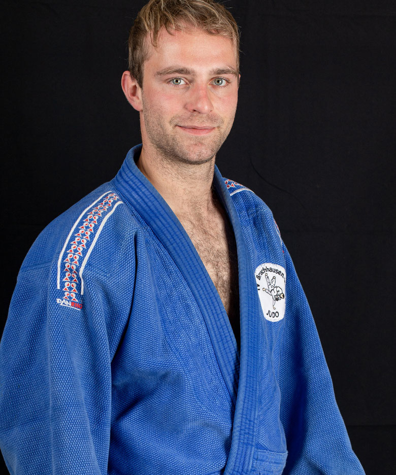
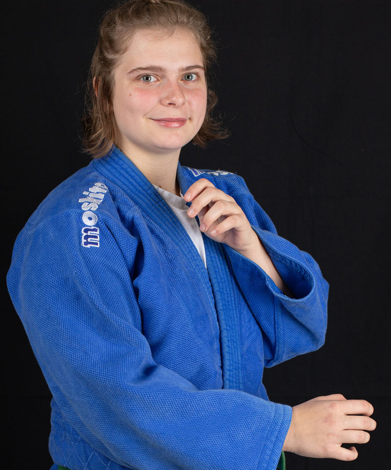
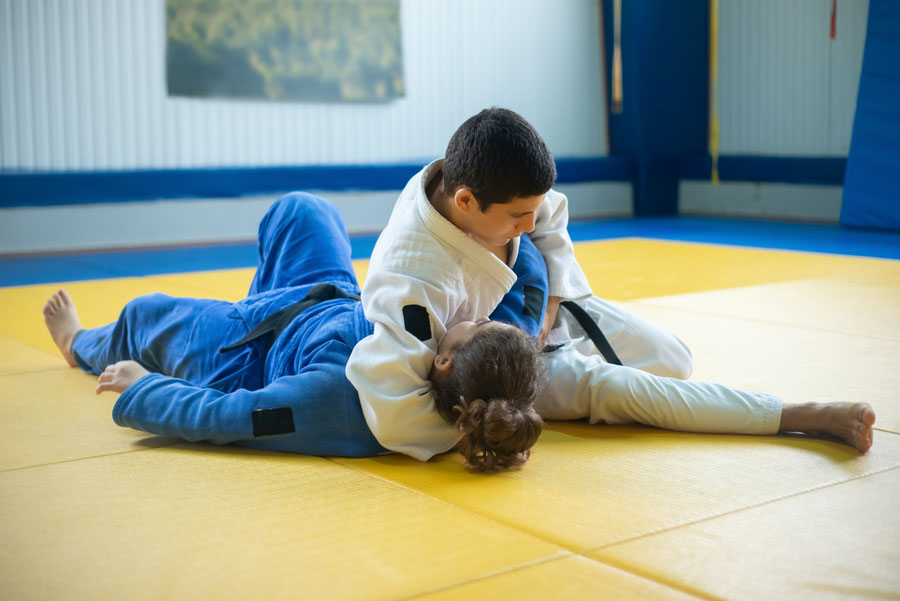

Patrick Schmitz
Trainer für Jugendliche und Erwachsene
- Ehemaliger Wettkämpfer
- Norddeutscher Meister und Landesmeister
- Übungsleiterlizenz · 1. Kyu
Judo beim TV Bruvi
Judo ist mehr als ein Sport. Es ist Bewegung, Respekt und das gute Gefühl, gemeinsam etwas zu schaffen.
Für Anfänger:innen und
alle, die in Bewegung bleiben wollen.

01 Respekt
02 Mut
03 Miteinander
04 Bewegung
Schön, dass du da bist
Judo gibt es in Bruchhausen-Vilsen seit über 30 Jahren. In unserer Sparte trainieren mehr als 80 gemeldete Judoka.
Unser gut ausgebildetes Trainerteam begleitet dich – ob du an deinem nächsten Gürtel arbeitest, Selbstverteidigung lernen, deine Beweglichkeit verbessern oder Wettkampfjudo ausprobieren möchtest.
Komm vorbeiUnser Trainerteam
Unsere Trainer:innen bringen Wettkampferfahrung und Qualifikationen mit und begleiten verschiedene Altersgruppen.

Trainer für Jugendliche und Erwachsene

Trainerin für Kinder, Jugendliche und Erwachsene

Trainerin für Kinder und Jugendliche
Jacqueline Schumann, Björn Terveen, Ines Kämmerer und Stephanie Schmitz – unterstützt von engagierten Eltern.
Trainingszeiten
Vier Trainingsgruppen bieten einen passenden Einstieg für Kinder, Jugendliche und Erwachsene.
Ab 4 Jahren
Ab 6 Jahren
10–13 Jahre
Ab 13 Jahren
Trainingsort
Mehr als Technik
Die japanische Kampfkunst Judo geht auf Jiu-Jitsu zurück. Mit Technik, Gleichgewicht und Geschick üben wir Würfe und Kontrolle am Boden – fair und mit gegenseitigem Respekt.
Aus unserem Vereinsarchiv
Ein Rückblick auf Turniere und Erfolge aus den Jahren 2022 und 2023.

Acht Judoka gingen in den Altersklassen U9, U11 und U15 an den Start. Das Team holte sechs Gold- und zwei Silbermedaillen.

Bei einem Turnier mit rund 250 Kindern erkämpfte das Team eine Gold-, zwei Silber- und drei Bronzemedaillen.

Beim ersten Turnier für alle teilnehmenden Kinder aus U9, U11 und U13 gab es zwei Gold-, zwei Silber- und vier Bronzemedaillen.

Janine Schmitz gewann Gold und bezwang im Finale eine Athletin, die bei den Deutschen Meisterschaften Bronze geholt hatte.

Nach dem Landesmeistertitel gewann Janine Schmitz Bronze bei den Norddeutschen Meisterschaften und belegte bei den Deutschen Meisterschaften den siebten Platz.
Dein erster Schritt
Du möchtest Judo kennenlernen? Komm ohne Anmeldung mittwochs oder freitags um 16 Uhr in die Große Schulsporthalle (Auf der Loge). Drei Probetrainings sind möglich, bevor du Vereinsmitglied werden musst. Vorkenntnisse brauchst du nicht.
Fragen? Schreib unsDrei Probetrainings kannst du unverbindlich mitmachen; danach ist für weiteres Training eine Vereinsmitgliedschaft nötig.
Wir freuen uns auf dich
Du hast Fragen zum Training oder möchtest erst einmal reinschnuppern? Nimm Kontakt mit dem Verein auf – wir helfen dir gerne weiter.
Fragen zu Trainingszeiten? Wende dich direkt an die Vereinsleitung.